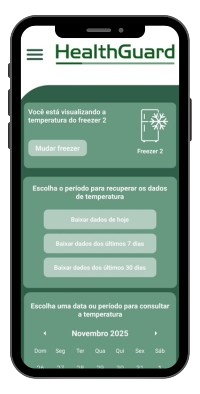
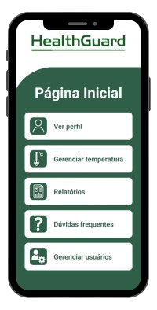
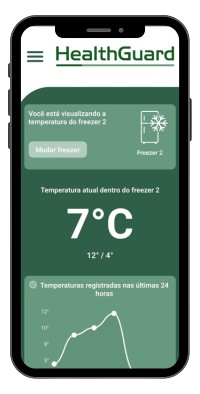
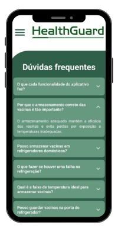

Controle total de relatórios, gestão de usuários e monitoramento de dados cruciais de forma simples, segura e em tempo real. A tranquilidade que sua operação precisa!

Cadastre, edite e organize facilmente seus usuários com diferentes níveis de acesso.
Monitore temperaturas e receba alertas automáticos para manter a integridade das vacinas.
Visualize dados completos, históricos e exporte relatórios em PDF ou Excel.
Acesse nossa seção de dúvidas frequentes e obtenha suporte ágil e eficiente.
"O HealthGuard nos deu tranquilidade. Os alertas automáticos salvaram um lote inteiro de vacinas que custaria milhares! Essencial para nossa gestão de qualidade."
"A interface é super intuitiva, e os relatórios são gerados em segundos. Finalmente, um app que realmente simplifica o controle de temperatura!"
"Integração perfeita com nossos termômetros. Os dados em tempo real no celular facilitaram as auditorias internas de forma surpreendente."



Fale conosco e comece a proteger seus ativos mais valiosos hoje mesmo.